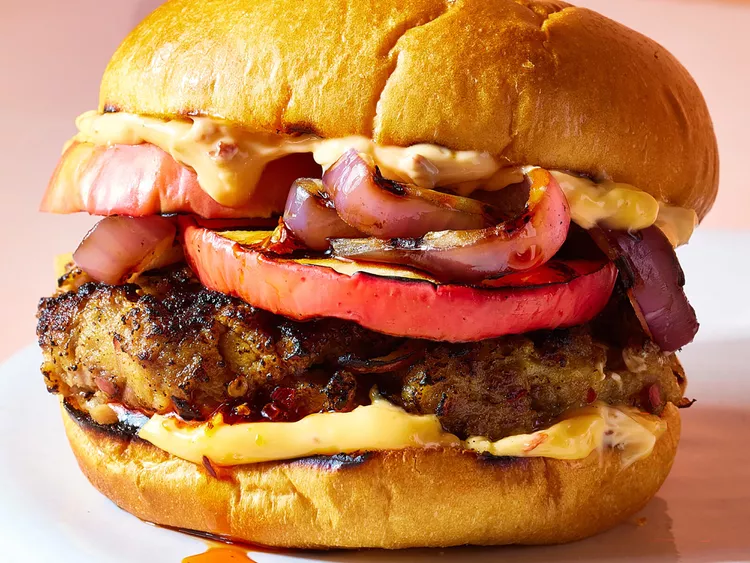

Hamburgers with Grilled Apple and Chili Crisp

Description
These hamburgers with grilled apple and chili crisp are juicy and delicious. For your summer grilling,
level up beef patties with grilled sweet-tart apples and thick-cut onions and chili-crisp mayo.
Ingredients
-
2 red apples, cored (such as Fuji, Gala, or Pink Lady)
-
1 pound ground beef
-
1/4 cup fine dry breadcrumbs
-
1 tablespoon plus 2 teaspoons chili crisp, divided, plus more for serving
-
1/2 teaspoon salt